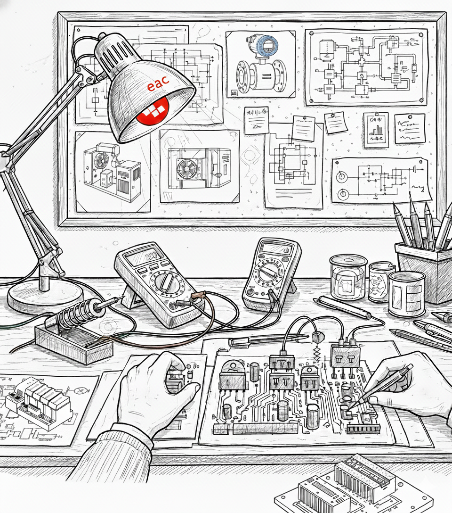

各位九方的同仁：
2026年的阳光已至。在这崭新的起点，我们不谈成绩，不谈目标，单纯地致敬。
致敬伙伴与对手

图：并肩作战，聚力前行
是合作让我们懂得聚力，是竞争逼出了更强的自己。凡是共同奋斗过的，皆为战友；凡是汗水流过的，必有回响。
致敬低头赶路的人
致敬那些迎难而上的勇气，致敬那些“顶着风的陀螺”。在充满不确定性的时间里，我们用这份“制造秩序”的能力，把自己活成了唯一的确定性。
此处显示：秩序微光插图
(请保存 inline-sketch.png)

(请保存 inline-sketch.png)
图：在纷乱的系统中，点亮秩序的微光
致敬平凡与无名
在大兴机场航站楼，在健康云、火山云数据中心的机房里；在几十米高的蓄冷罐、在几千公里外的异国马来，我们的名字不刻在丰碑上，只写在系统上线时屏住呼吸的画面里。
在夜色阑珊时，办公室亮着的一束灯光里；在姑娘们汗湿发梢的仓库里；在凌晨依然在线的会议里，无名的九方人交付的不负所托的价值
我们致敬自己——“燃烧了时光想要干成个样子”，不是为了掌声，而是为了对得起“专业”二字。
虽然我们平凡，但值得尊重
虽然我们无名，但创造价值